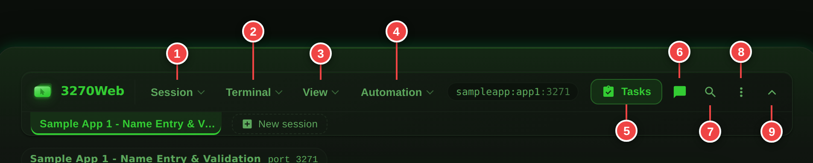
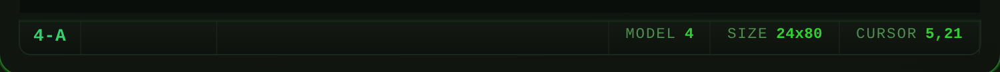
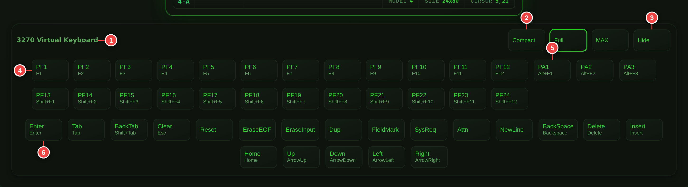

Keyboard and Controls¶
This page explains the menu bar, keyboard mappings, and the virtual keypad.
PF keys from the physical keyboard, the virtual keypad, and the command palette, in under a minute:
The menu bar¶
Everything you can do to a session lives in one bar across the top: named drop-downs on the left, a small cluster of the actions you reach for most on the right, and the session tabs beneath.
| Menu | Holds |
|---|---|
| Session | Connection profiles, connection details, reconnect, print screen, disconnect |
| Terminal | Find on screen, copy screen, screen history, file transfer, keyboard mapping |
| View | Focus mode, hotspots, virtual keypad, terminal size, theme |
| Automation | Recording, playback and chaos exploration (Engineering mode only) |
To the right of the menus: Tasks, the AI chat panel, the command palette, an account and settings menu, and the chevron that collapses the whole bar.

The bar works from the keyboard the way a desktop menu bar does. Tab to a menu, then:
| Key | Does |
|---|---|
| Down / Up | Open the menu, and move through its items |
| Left / Right | Move to the menu either side, open |
| Enter | Run the highlighted item |
| a–z | Jump to the next item starting with that letter |
| Esc | Close the menu; again to hand the keyboard back to the terminal |
While a menu is open the terminal does not see your keystrokes — the arrows walk the menu rather than moving the 3270 cursor — and when you run an item the keyboard goes straight back to the screen.
Collapse the bar with the chevron at the right-hand end when you want the height back. A single chevron stays behind to bring it out again, and the choice is remembered per browser. For the whole screen, use focus mode below.
Focus mode¶
Alt+Enter (or the expand icon in the header, or the command palette) gives the terminal the whole screen. It is the long-standing full-screen convention for terminal emulators.
- The card framing, background and application chip all go.
- The menu bar and session tabs move into a slim rail at the top that stays hidden until you move the pointer to the top edge or tab into it. A small accent mark at the top centre shows where it is.
- The terminal grows to fill the space, and the browser goes true fullscreen — so it fills the display, not just a window.
- The OIA always stays. It is the operator's instrument panel, and hiding
X SYSTEMwould defeat the point of having it.
Leave with Alt+Enter again, the toggle in the rail, or by leaving fullscreen (Esc or F11). The choice is remembered per browser.
The rail overlays nothing: the terminal reserves its height, so the top row of the screen — which on a 3270 is the title and message line — is never covered when the rail slides out.
Focus mode and the keypad¶
Focus mode and a MAX-size virtual keypad want the same space, and focus mode is the one layout with nowhere to scroll. The terminal wins: the keyboard is held to about a third of the display, and the terminal takes everything else.
That is a deliberate call rather than a compromise. Focus mode exists to give the terminal the screen, and an operator who would rather have the larger keyboard has a better answer available — leave focus mode, where the keypad is free to take its full size and the page simply scrolls.
The keypad scales further down in focus mode than it does elsewhere, so all of it stays on screen rather than running off the bottom edge. Leaving focus mode restores whatever size it had before.
File transfer (IND$FILE)¶
Terminal → File transfer (also in the command palette) sends a file to the host or receives one, using IND$FILE.
- Host file is the dataset or file name —
USER.DATA(MEMBER)for a PDS member. - Mode is text (with ASCII/EBCDIC translation and line-ending handling) or binary.
- New dataset options — record format, record length, block size and space allocation — sit behind a disclosure, because they only matter when sending to a dataset that does not exist yet.
The session has to be at a command prompt
IND$FILE is a program that runs on the host, so the session must be somewhere that can start it — a TSO READY prompt, ISPF option 6, or the CMS prompt. A transfer started from inside an application screen will fail, and the host's own error is what gets reported back.
Uploads are capped at 16 MiB and downloads at 64 MiB. IND$FILE moves data over the 3270 data stream, which is slow — a large transfer takes minutes, and the dialog says so while it runs. A transfer is given half an hour to finish, rather than the seconds every other terminal action is held to: how long it takes is a property of the dataset, and nothing at this end can hurry it along.
A transfer uses the same connection the screen does, so the session is busy for the duration. The terminal says so rather than appearing to hang: a screen refresh that arrives while a transfer is running reports a busy session after a few seconds instead of queueing behind it.
Connection profiles¶
TLS, the LU name, the terminal model and the code page used to be server-wide environment variables, so every session in a deployment shared them. A connection profile makes them per-host, which is what lets one host run on TLS while another runs in the clear, or a model 2 against one application and a model 4 against another.
A profile holds a name, host, port, optional TLS (with or without certificate verification), optional LU name, terminal model and code page, and a description.
- Profiles on the connect page picks one and connects.
- Profiles in the terminal header manages the list.
- The + New session button in the tab bar opens the same picker.
When it is picking a session to open rather than managing the list, the picker also offers the bundled sample apps and a box to type an address into, so there is always something to connect to — including on an instance that has no profiles yet and no mainframe to reach.
Bundled sample app at the top of the editor points a profile at one of
those apps. Choosing it fills in the host and port and clears TLS, which the
sample apps do not speak; typing over the host afterwards puts the list back
to "a mainframe on the network". A profile pointing at a sample app is listed
by the app's name rather than by the sampleapp: address it is dialled with.
Each profile shows the target exactly as s3270 will see it — for example
L:Y:LU01@mainframe:992 — so what you check is what actually gets dialled.
L: is TLS, Y: means certificate verification is off, and LU01@ pins
the logical unit.
Skip certificate verification is weaker than TLS
It encrypts the connection but accepts any certificate, so it does not protect against an impostor host. It is badged differently for that reason, and cannot be set on a profile that is not using TLS.
Profiles are server-side
Unlike the browser's saved-hosts list, profiles live on the server, so
they are shared by everyone using that deployment and survive a cleared
cache. They are stored in profiles.json beside the app.
Connection details¶
Connection in the terminal header — or "Connection details" in the command palette — shows what the terminal knows about its own link to the host. None of it is on the screen.
That matters because a session can render perfectly and still be connected on terms nobody chose. TN3270E may have failed to negotiate, the host may have bound a different LU from the one the profile asked for, TLS may not be in force. The application looks the same either way. This is the only place the difference shows, and it is the first thing worth reading out on a support call.
The panel leads with the fields that answer that question — state, host, terminal name, screen size, code page, TLS, LU name, bound PLU, the negotiated TN3270E and telnet options, connect time and byte counts — and puts everything the terminal reports under a disclosure below, in the terminal's own order. A field this build reports that the panel has never heard of still appears; it just appears in the second list.
Two details worth knowing:
- A value the terminal reports as empty is shown as none reported rather than left blank. "The host bound no LU name" and "this build cannot tell you" are different answers.
- The longest values (copyright, proxy list, running tasks) are abbreviated by the terminal itself and carry a Show button that fetches them in full.
Copy puts the whole list on the clipboard as plain text, for pasting into a ticket. Refresh re-reads it — the byte counts always move, and the connection state moves exactly when it matters.
The same information is on the REST API for scripted checks.
Sessions and tabs¶
You can keep up to six host sessions open at once. The tab bar sits directly under the menu bar and is there from the moment you connect, showing the one session you have and a + New session button at the end of the row.
- + New session opens another one. Where you sign in to a selection screen, it opens another selection screen — that is the host list you were given, and a second one beside it would only disagree with it. Otherwise it asks in the same picker Session → Connection profiles uses: your connection profiles, the bundled sample apps, or an address you type.
- Click a tab to switch to it.
- The × on a tab closes that session; the others keep running. A single tab has no × — closing your only session is a disconnect, and Session → Disconnect is where that lives.
-
Disconnect ends only the session you are looking at — the confirmation names it. If other tabs are open you land on one of them rather than back at the connect page.
Disconnecting your last session leaves you at the connect page even where signing in would normally put you straight onto a host. Disconnect means you wanted out; asking again is a click away, and being reconnected without one made the button look broken.
| Shortcut | Does |
|---|---|
| Alt+N | Open another session |
| Alt+W | Close the current session (when more than one is open) |
| Alt+1 … Alt+9 | Switch to that session in the bar |
These are Alt chords rather than Ctrl ones because the browser owns Ctrl+T, Ctrl+N and Ctrl+W and will not give them up. If you have bound one of them to a host action in the keyboard mapping editor, your binding wins — these are defaults, and an explicit remap is not.
All of it is in the command palette too: press Ctrl+K and type
session for the new, switch and close commands.
Sessions are fully independent — each has its own host connection, screen, OIA, screen history and unsubmitted input. Switching tabs reloads the page, which is deliberate: a session owns more than the screen, and a reload is the one way to be certain none of the outgoing session's state is left pointing at the incoming one. The sessions themselves stay live on the server across it, so nothing is lost.
Tabs are labelled by host. Two sessions to the same host are told apart by port, and two to the same host and port are numbered in the order you opened them.
Sessions are per browser
The set of open sessions lives in a browser cookie. Opening 3270Web in a different browser or a private window starts from nothing, and the idle-session reaper still closes sessions you leave untouched for long enough.
Workspace modes¶
The bar has two surfaces, chosen by Engineering tools in the account and settings menu. The choice is remembered per browser.
Business is the default and shows only what you need to use a mainframe application: the Session, Terminal and View menus, Tasks, AI chat, the command palette and settings.
Engineering adds the Automation menu on top — recording, playback and chaos exploration, in two labelled groups within the one menu.
Nothing is removed in Business mode — switching modes is one click, and everything in the Automation menu remains reachable from the command palette either way.
Runs are always visible
If a recording, playback or chaos run starts while you are in Business mode — the AI assistant can start one — the workflow status widget appears anyway, and goes away again when the run ends. You are never left watching a terminal move on its own with no way to see why. The playback transport (step, pause, stop) appears under the bar for the same reason: controls you need in a hurry do not belong behind a drop-down.
Command Palette¶
Press Ctrl+K (Cmd+K on macOS) anywhere in the session — including while the terminal has keyboard focus — to open a searchable list of every menu and modal action.

- Type to filter; matches are highlighted and grouped by area.
- Up / Down move through results, Enter runs the highlighted one, Esc closes without doing anything.
- Recently used commands appear first when the search box is empty.
- Theme switching is available here too, so you can change the look without opening Settings.
- Terminal operations are here: copy the screen, copy a marked block, reconnect, toggle insert mode, reset the keyboard, show the keypad, switch workspace mode.
- Every host key is searchable but hidden from the default list, since
twenty-four PF keys would crowd out everything else. Type
pf3,attn,eraseorpa1to reach them. - Commands whose control is hidden are hidden too, so in Business mode the palette does not offer recording or chaos actions.
While the palette is open it takes over the keyboard completely, so nothing you type leaks through to the 3270 screen underneath.
Operator Information Area¶
The bar directly beneath the screen is the OIA, and it carries the same indicators a 3270 operator has read reflexively for forty years.

| Position | Meaning |
|---|---|
| Left block | 4 online, 4-A online and owned by an application, – disconnected, ? status not yet readable |
| Input inhibit | Empty when ready. X SYSTEM while the host is processing. X -f on an operator error |
^ |
Insert mode is on (see Insert and overtype) |
MODEL |
Negotiated 3270 model number |
SIZE |
Screen geometry in rows × columns |
CURSOR |
Current cursor row and column |
The two indicators on the left are the ones that matter:
X SYSTEMmeans the host has the keyboard and is thinking. Wait. Pressing Enter again will not help. It appears the moment an AID key goes out, so there is no window in which the terminal looks idle while the host is busy — and it keeps being drawn for as long as the host takes, because the terminal stops occupying its own connection while it waits. A transaction that runs for two minutes is two minutes ofX SYSTEM, not two minutes of a page that appears to have stopped.X -fmeans input is inhibited by an operator error — most often a letter typed into a numeric field, or a full field in insert mode. It will not clear on its own: press Esc orReset.
The terminal bezel also tints while input is inhibited, so a locked keyboard is noticeable without reading the bar.
Screen readers
Only the inhibit explanation is announced, not the whole bar. The bar also carries the cursor position, and announcing that on every keystroke made the terminal unusable with a screen reader.
Virtual Keyboard (Keypad)¶
Use the keyboard icon to show or hide the virtual keypad.
Keypad features:
- Three sizes and a hidden state, stepped through by one control
- PF keys (
PF1toPF24) - PA keys (
PA1toPA3) - Common editing/navigation keys
- A whole keyboard, letters and number pad included, in MAX
The keypad visibility preference can be saved in Settings (Use keypad).
Sizes¶
The control at the top right of the keypad steps through the sizes in order, smallest last:
| Size | What it shows |
|---|---|
| Compact | The keys a screen actually ends with — Enter, Tab, back-tab, Clear, the PF keys |
| Full | Every 3270 command key, laid out in groups |
| MAX | The whole keyboard: function row, letters, number pad, cursor cluster |
| Hide | Nothing. The next press of the control is on the way back — it reopens compact |
It is one control rather than four buttons because the keypad's header is the last place on the display that can afford a row of chrome, and because the sizes are a progression rather than four unrelated choices. The label says which size is showing; the tooltip says which one pressing it brings.
The MAX keyboard¶
MAX is a keyboard, not a list of buttons: staggered rows, wide modifiers where the hands expect them, and the cursor cluster and number pad in their own columns to the right. Every key is in the place years of muscle memory put it, and the block is as short as a keyboard is — which is the whole point, because every row it takes below the terminal is a row the 3270 screen does not get.
The 3270 command keys take the modifier positions. Clear sits at the Esc
end of the function row — Esc is the key it answers to — with Attn at the
other end. Reset takes the Caps Lock position, the key an operator
reaches for without looking and, on an inhibited keyboard, the only one
that does anything. SysReq, EraseEOF, EraseInput, Dup, FieldMark
and NewLine sit on the bottom row either side of the space bar.
Shift¶
The keyboard has a shift key at each end of the letter block, and it does what shift does everywhere:
- Capitals and the upper legends. Press shift, then a key:
Arather thana,£rather than3. Each symbol cap prints both legends, the shifted one above, and the pair swap emphasis while shift is on so the row always reads as what it will type. - 24 function keys on 12 caps. Under shift the function row becomes
PF13-PF24, the same trick a physical keyboard plays to get 24 function keys out of 12. The caps re-label, soPF19reads⇧F7underneath. - Back-tab. Shift turns
TabintoBackTab, which is what Shift+Tab does on the physical keyboard and what saves the row a cap of its own.
One press arms shift for the next key and it releases itself, the way a
keyboard behaves when the finger comes off. A second press locks it, for a
run of capitals or a session paging through PF19 and PF20; a third
releases it. Armed and locked look different from each other, because a
modifier that is silently holding is how PF7 goes out as PF19.
Full mode still shows all 24 PF keys at once, for anyone who would rather not shift.
Regional layouts¶
Keyboards are not the same shape everywhere, so the region is a choice, in the picker beside the size control:
| Layout | What it changes |
|---|---|
| US (ANSI) | @ over 2, # over 3, " on the apostrophe key, \ above a wide Enter, a wide left shift |
| UK (ISO) | " over 2, £ over 3, @ on the apostrophe key, a #/~ key on the home row, \ beside a narrow left shift, and the stepped Enter that goes with them |
The difference is geometry as much as legends — the ISO layouts carry one more key on the home row and one more on the bottom row — so choosing a region rebuilds the keyboard rather than relabelling it.
The starting choice comes from the browser's locale, and after that from whatever you last picked, because the locale is a guess at which keyboard is on the desk and your answer is not. The picker appears only in MAX, which is the only size with letters to arrange.
When it will not fit¶
The keyboard keeps its shape at every width — the number pad never unstacks into more rows — and what does not fit is scaled rather than wrapped. On a narrow display that means smaller keys, not a taller keyboard. The terminal is served first: the keyboard takes the room left beneath it and scales into that.

- Keypad title area
- Size control — steps compact, full, MAX, hidden
- PF key groups
- PA key group
- Common 3270 action keys
Touch devices¶
On a tablet or a phone — anything the browser reports as a coarse pointer — 3270Web adds a bar of terminal keys across the bottom of the display and makes the screen tappable. Nothing changes on a desktop, including a desktop with a touchscreen: a device with a keyboard already has an Enter key and does not want a permanent bar across the bottom.
The action bar. Every 3270 screen ends with an AID key, and a device with
no keyboard has none, so without this the terminal is read-only. The first row
is what a screen actually ends with — Enter, Tab, back-tab, PF3, Clear,
Reset — sized for a thumb and placed where a thumb is. PF… opens a drawer
with PF1–PF24, PA1–PA3, Home, EraseEOF and Insert, scrolling
sideways: a phone cannot show two dozen function keys at a size anyone can
hit, and shrinking them until it can is how a keypad stops working.
The bar rides above the software keyboard rather than hiding behind it, which matters because the keyboard opens exactly when a field is focused — the moment the AID keys are needed.
Pressing a key here is the same as pressing it on a physical keyboard: the field keeps focus, what was typed into it is still there, and the key goes through the same path.
Tap to place the cursor. A tap on the protected part of the screen puts the cursor on that cell. "Position the cursor beside your choice and press Enter" is a whole genre of mainframe screen, and with a keyboard it is an arrow key — with a finger it had no answer at all. A tap on an input field is still the browser's, which is what opens the software keyboard for typing.
Reading an 80-column screen on a narrow display. The screen scrolls sideways and pinch-zooms. It does not reflow, and it does not shrink to fit: which column a character sits in is part of what a 3270 screen means, so a line that wrapped would be a line that lied. Use the zoom control in the terminal tools for a size that suits the device — it scales the grid, which keeps it a grid.
The landscape suggestion. A phone held upright fits those 80 columns into about 320 pixels, which works out at a four-pixel character cell. Turned sideways the same screen gets half again as much width, so a note below the terminal suggests it.
It is a suggestion and behaves like one. It never covers the terminal — it sits in the space portrait leaves empty underneath, which is space the screen cannot grow into anyway. It is not a dialog and never takes focus, so it cannot interrupt typing. It appears because the screen is measurably cramped rather than because the device is a phone: a tablet held upright has room for a nine-pixel cell and is never asked to rotate. Turning the phone retires it. Dismissing it retires it for good — somebody with rotation locked, a mounted device, or one hand free has answered the question, and asking again on the next screen is how a hint becomes a nag.
The full virtual keypad is still available from the terminal tools widget, if a tablet has room for it.
Physical Keyboard Mappings¶
Common mappings used by 3270Web:
| Key | Action | Where it runs |
|---|---|---|
Enter |
Enter | Host |
F1..F12 |
PF1..PF12 |
Host |
Shift+F1..Shift+F12 |
PF13..PF24 |
Host |
Alt+F1 / Alt+F2 / Alt+F3 |
PA1 / PA2 / PA3 |
Host |
Esc |
Clear (press twice) — or Reset while input is inhibited | Host |
Tab / Shift+Tab |
Next / previous field | Terminal |
Arrow keys |
Cursor movement | Terminal |
Home |
First input field | Terminal |
Insert |
Toggle insert / overtype | Terminal |
Backspace / Delete |
Edit within the field | Terminal |
Alt+N |
Open another host session | Terminal |
Alt+W |
Close the current session | Terminal |
Alt+1..Alt+9 |
Switch to that session tab | Terminal |
Additional 3270 actions available from the keypad and the command palette include Reset, EraseEOF, EraseInput, Dup, FieldMark, SysReq, Attn, and NewLine. These have no default key of their own; the keyboard mapping dialog below can give them one.
Remapping the keyboard¶
Years of muscle memory from another terminal emulator does not transfer to a fixed key layout, so every one of these actions can be rebound. Open Terminal → Keyboard mapping, or find it in the command palette.
- Rebind puts the row into capture: press the combination you want and it is recorded. Escape cancels; the terminal never sees the keystroke.
- A key can only mean one thing, so binding a combination that is already in use moves it, and the dialog says which action lost it.
- Default restores one action's built-in key. Reset all clears every custom binding.
- Custom bindings layer over the built-ins — the defaults in the table above keep working unless you rebind them specifically. The greyed key beside each action is that built-in, shown so you can see what a key already does before you take it.
Combinations the browser reserves for itself (Ctrl+W, Ctrl+T, F11)
cannot be captured by any web page, 3270Web included.
Sharing and migrating a layout¶
Bindings are stored in the browser, not on the server. A keyboard layout is a personal preference and there is no user identity to attach it to, unlike a connection profile, which is deployment configuration an administrator sets once.
- Export writes the bindings to a JSON file; Import JSON reads one back. This is how you move a layout to another machine or browser, and how a team shares a house standard.
- Import keymap file reads a
.KMPkeyboard file from another emulator directly, so a migration does not start by rebuilding everyone's layout by hand.
The .KMP dialect varies between the versions that produce these files, so
the importer is deliberately tolerant. It maps what it recognises and reports the number of lines it
could not rather than dropping them silently — a partial import that
tells you what is missing beats one that looks complete and is not. Check
the reported count, and rebind anything it skipped by hand.
Cursor movement is local¶
Tab, Back-Tab, the arrows and Home move the cursor inside the browser and do not contact the host. On a 3270 the cursor belongs to the terminal; the host is told where it is exactly once, in the inbound data stream, when an AID key is pressed.
This matters on a real network. Each of those keys used to cost a full round-trip — submit, s3270 action, screen re-read, re-render — so tabbing through a twelve-field screen over a WAN meant a dozen waits for movement the host never sees. They are now instant.
One deviation from a hardware terminal is worth knowing: a field's caret range is bounded by the text currently in it, not its full width, so arrowing right past the end of a short value leaves the field rather than walking its blank tail. Typing still fills the field normally.
Cursor on protected text¶
The cursor is not confined to the input fields. Up and down move one row at a time and keep the column, the arrows walk cell by cell and wrap at the screen edges, and any cell can be the cursor's resting place — including one in the middle of the application's own label text.
That is not a detail. A whole family of mainframe screens is driven by cursor position rather than by field content: "put the cursor beside your choice and press Enter" menus, cursor-select fields, and anything that reads the inbound cursor address. A cursor that could only sit in an input field cannot operate them at all.
While the cursor is on protected text:
- It is drawn as an underscore over the cell, and the fields' own carets are hidden, so exactly one thing on the screen looks like the cursor.
- The OIA
CURSORreadout shows where it is, same as anywhere else. - Typing raises
X -f, the way a terminal refuses input to a protected position. Press Esc orResetto continue; the cursor does not move. - The next AID key reports the position to the host. This is the payoff.
Clicking anywhere on the screen puts the cursor there. Tab and Home still mean field, so they take the cursor back into one.
When the host sends a new screen it sets the cursor, and 3270Web now honours that even when the host parked it on protected text — a menu that positions its own cursor beside an option keeps it there.
Insert and overtype¶
The terminal starts in overtype, the 3270 default: what you type replaces
the character under the cursor. Press Ins to switch to insert, which
pushes the rest of the field right; the OIA shows ^ while it is on.
Typing into a field that is already full in insert mode raises an
operator error rather than silently dropping the character.
Insert is a terminal function — pressing it never contacts the host.
Numeric fields¶
Fields the host marks numeric accept only digits, ., ,, - and +.
Typing anything else is refused and raises X -f in the OIA; press
Esc or Reset to continue. This is what a real terminal does, and it
is a round-trip faster than letting the host reject the value.
Pasting into a numeric field is treated more leniently: non-numeric characters are stripped and the digits land. Copying an account number that arrived with spaces or dashes in it is routine, and refusing the whole paste over one stray character would be the wrong answer.
Auto-skip¶
Fill the last position of a field and the cursor sometimes jumps to the next field on its own. Whether it does is the application's decision, not the terminal's, and 3270Web reads that decision the way a 3270 does.
Auto-skip is not an attribute a field carries about itself. It is the protected+numeric attribute on the field after an input, and what it controls is whether filling that input advances the cursor. So an application can say "this field runs straight into the next one" for a date split across three boxes, and "stop here" for a password the operator may want to correct — using the same field-attribute byte it already sends.
The browser cannot work this out on its own: a protected field arrives as plain text with no attributes attached to it. 3270Web resolves the rule server-side, where the field list and its attribute bytes are, and marks each input accordingly.
Auto-skip is independent of numeric enforcement. A numeric field is not automatically an auto-skip one, and an alphanumeric field can be.
Type-ahead¶
Keystrokes typed while the host holds the keyboard are buffered and replayed once the screen comes back, instead of being dropped. AID keys are deliberately not buffered — replaying a transaction fired against a screen you had not yet seen is a hazard, not a convenience.
Escape needs a second press
On a 3270 terminal Clear wipes the entire screen, but most people
press Esc reflexively to dismiss things. 3270Web therefore arms
Clear on the first Esc and only sends it if you press Esc
again within two seconds. Any other key — or letting the window
elapse — cancels it.
Moving focus out of the terminal¶
While the terminal has focus it captures Tab so field navigation reaches the host instead of moving browser focus. To get out to the rest of the page, press Ctrl+Tab (or Ctrl+Shift+Tab).
Hotspots¶
Most mainframe screens print a key legend — F1=Help F3=Exit F7=Bkwd.
With hotspots on (the default), those are clickable: click F3 on the
screen and 3270Web sends PF3. URLs printed on a screen are clickable too
and open in a new tab.
Toggle them from View → Hotspots or the command palette; the choice is remembered per browser.
Two rules keep hotspots from doing anything surprising:
- Never over an input field.
PF3sitting inside a value someone typed is data, not a control, so it does not become clickable. - Only real keys.
PF1–PF24andPA1–PA3are recognised; anything outside those ranges (F30,PA9) is ignored, so a screen full of numbers does not sprout dead hotspots.
Find on screen¶
Ctrl+F (or Terminal → Find on screen) opens a find bar over the terminal. Enter moves to the next match, Shift+Enter the previous, Esc closes.
This searches the screen, not the page. The browser's own Ctrl+F cannot see values inside input fields — which is where the account numbers and names actually are — and cannot match text that straddles a field boundary. Both work here.
Stepping onto a match that sits in an input field also moves the 3270 cursor there, since someone who searched for a field is usually about to type in it.
Outside the terminal — in the AI chat panel, in a settings field — Ctrl+F is left alone and the browser's own find still works.
Screen history¶
A 3270 screen is repainted in place, so once the host moves on, whatever was there is gone. Terminal → Screen history (also in the command palette) opens a read-only view of recent screens.
- Left / Right or the Older / Newer buttons move between screens.
- Copy puts the displayed screen on the clipboard.
- Esc closes.
The last 50 screens are kept per session, as plain text. Consecutive identical screens are recorded once, so the history is a record of what you saw rather than of how often the browser polled.
It is deliberately read-only: you cannot type into a screen from five minutes ago, and pretending otherwise would be worse than not offering it. History is per session and does not survive a disconnect.
Explaining a screen¶
Terminal → Explain this screen (also in the command palette, and as the bulb button beside the chat input) asks the AI assistant what the screen in front of you is — useful for an unfamiliar transaction, or a panel several steps into a flow somebody else recorded.
The screen is captured as you ask and sent with the question, so the answer describes the screen that prompted it rather than whatever the host has redrawn by the time the assistant replies. Follow-up questions are answered against the same screen. Hidden password fields are masked before anything leaves 3270Web. Setting up a provider is covered in AI Chat Mode.
Copying from the screen¶
The screen is rendered as text with input fields spliced into it, so dragging across it with the mouse produces mangled output — the input values drop out of the selection. Use these instead:
- Terminal → Copy screen (or the command palette) copies the whole screen as text, including anything you have typed but not yet submitted. Values in hidden password fields are never copied, since they were never displayed.
- Rectangular block copy: hold Alt and drag over the screen to mark a rectangle, then press Ctrl+C. Esc clears the mark. This is how you get a column of values into a spreadsheet without the surrounding text coming with it.
Reconnecting¶
If the host drops the connection, 3270Web notices, shows
X DISCONNECTED in the OIA, and retries automatically with a backoff
(1s, 2s, 4s, 8s, 15s). If it comes back, the page reloads on the new
connection. If it does not, a banner offers a manual Reconnect, which
is also in the Session menu and the command palette.
Reconnecting starts a new host session, so recording and chaos state from the dead connection does not survive — the host-side conversation those features were tracking ended when the connection did.
Focus and Input Behavior¶
Host keys are sent to the host and the terminal content is refreshed. Cursor movement, insert mode and field validation are handled locally (see above), so only keys the host actually needs cause a round-trip.
Tips for Reliable Use¶
- Keep browser focus on the terminal area while typing.
- Use the keypad for less common 3270 keys if your keyboard layout does not expose them.
- If commands appear out of sync, pause briefly and retry in debug playback mode.